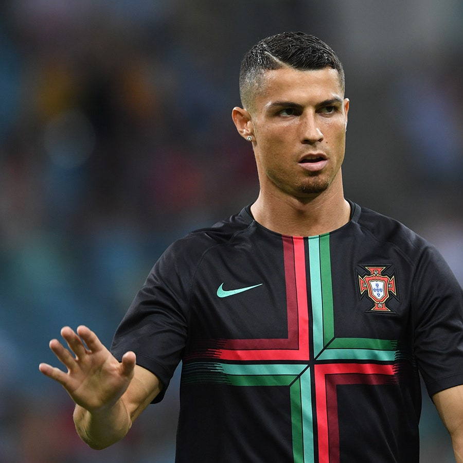

Cristiano Ronaldo Dos Santos Aveiro
Cristiano Ronaldo Dos Santos Aveiro, mas conocido como CR7, es un futbolista portugués que juega como delantero y es considerado como uno de los mejores delanteros del mundo del fútbol. Nació en Funchal, Madeira el 5 de febrero de 1985 y es hijo de María Dolores dos Santos Aveiro y José Dinis Aveiro. Actualmente juega en el Manchester United Football Club de la Premier League de Inglaterra y en la selección de Portugal, de la cual es su capitán y máximo goleador histórico.